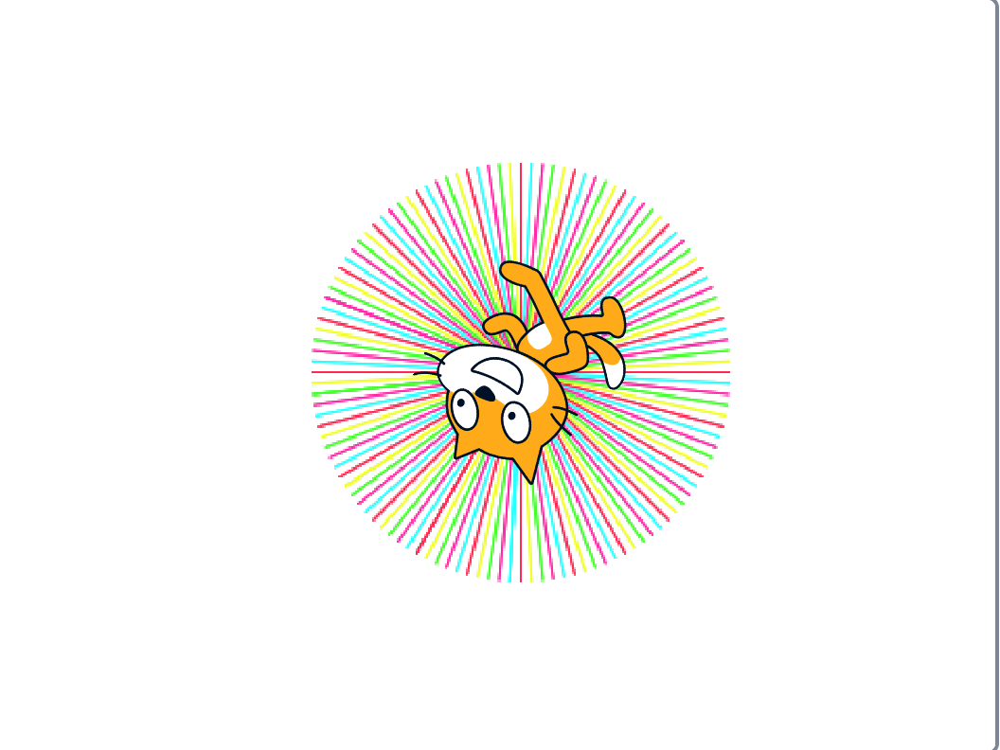
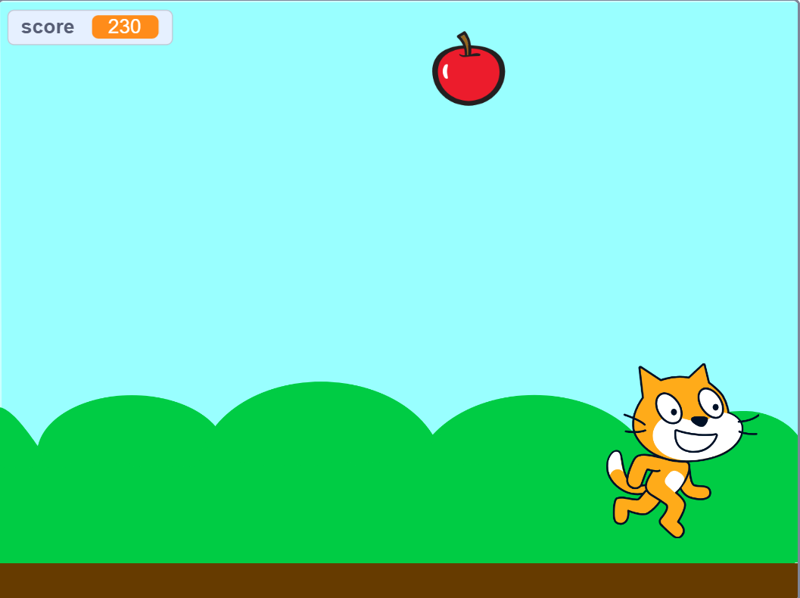

1週目のレポート ： 公大高専１年実習I-1
11班41番 好金天良
第1週目
1-1 サイエンスアート

1.内容
スクラッチを使って線を書くプログラムで描く実習をおこなった。私が実際に作成したサイエンスアートは様々な色の線でグラデーションを意識し、円のようなものを作成しました。
2.感想
私は今回体調不良で直接の参加ができませんでしたが、プログラムの体験としては、とても楽しく体験できたと思っています。
1-2 ゲーム

1.内容
ここでは、ねこがりんごをとると１０点ずつ点数が上がっていくゲームを作成しました。りんごは乱数によって出現する場所や、速度が様々になっている。
2.感想
私は前の文で書いたとおり授業に参加できませんでした。そのためゲームを作るのはともだちに教わりながらやりましたが、教わる必要もないくらいに簡単にプログラムが組めて楽しく学べました。
1-3 ホームページ作成
私のホームページ
1.内容
ここでは、自分のプロフィールの様なものが書かれたホームページを作成しました。私は部活はバレー部、趣味はゲームをすることと書きました。
2.感想
私はホームページを作るなんて、とても難しそうだと思っていましたが、先に組んでもらっているだけで、なんて簡単に文章が変更ができるとびっくりしました。
各ページへのリンク
1週目のレポート
2週目のレポート
3週目のレポート
私のホームページ